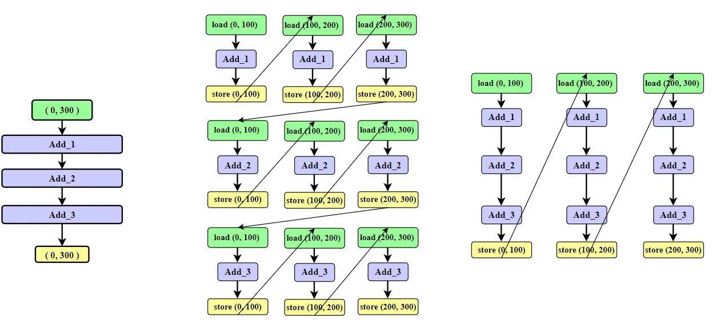

# 前言
本篇讲解 Tiling 操作为什么能够优化神经网络推理。
也可以参考 《Ascend C 算子优化实用技巧 04——Tiling 优化》
作为初学者，错误在所难免，还望不吝赐教。
# 什么是 tiling
无法完整的容纳算子的输入与输出，需要每次搬运一部分输入进行计算然后搬出，再搬运下一部分输入进行计算，直到得到完整的最终结果，这个数据切分、分块计算的过程称之为 Tiling，切分数据的算法称为 Tiling 算法或者 Tiling 策略。
# tile 算子和 tiling 的区别
我们先问一问语言大模型两者的区别：
# 神经网络推理中的 Tile 算子
在神经网络中，会发现 tile 作为一个节点算子出现。Tile 算子（或称为 Tiling 操作）是一种张量操作，它的功能是将输入张量沿着指定的维度重复一定次数。该算子需要指定两个参数：
- 1.reps
（重复次数）：这是一个整数列表，定义了每个维度上的重复次数。列表的长度必须与输入张量的维度相匹配，或者至少与你想要扩展的那些维度相匹配。如果对于某个维度你不希望进行复制，可以设置为 1。 - 2.axis
（轴 / 维度）：虽然某些框架可能不需要显式指定轴，因为它们可以通过 reps 的结构来推断，但有些情况下需要明确指出哪些维度应该被复制。
例如，假设有一个形状为 (2, 3) 的二维张量，并且你想沿第一个维度（行方向）重复两次，沿第二个维度（列方向）重复三次，那么你可以使用 Tile 算子并设置 reps=[2, 3]。这样操作后，输出张量将会是一个形状为 (4, 9) 的新张量，其中原始张量的内容被按照指定的方式进行了复制。
在不同的深度学习库中，Tile 算子的实现可能会有所不同。例如，在 TensorFlow 中，它是 tf.tile () 函数；而在 PyTorch 中，则对应的是 torch.tile () 或者 .repeat () 方法。每种实现都有其特定的语法和用法，但核心概念是一致的。
# AI 编译优化中的 tiling 操作
在 AI 编译领域，特别是针对深度学习模型的优化过程中，“tiling”（平铺）操作是指一种将计算任务分解成更小、更易于管理的子任务的技术。这种技术通常用于提高计算效率和内存使用效率，尤其是在处理大规模数据集或高维度张量时。
Tiling 的主要目的是：
- 1. 减少内存访问开销：通过将大块数据划分为较小的 “瓦片”，可以将这些小块数据加载到高速缓存中，从而减少对外部存储器的访问次数。这有助于利用 CPU 或 GPU 的高速缓存来加速计算过程。
- 2. 并行化处理：每个 “瓦片” 可以独立处理，这意味着它们可以在多核处理器上并行执行，或者在 GPU 等并行计算架构上高效地分发给不同的线程或流处理器。
- 3. 更好地利用硬件资源：通过适当调整瓦片大小，可以确保计算单元能够被充分利用，同时避免因单个任务过大导致的资源浪费。
- 4. 改善局部性：合理设置的瓦片尺寸可以帮助保持良好的空间局部性和时间局部性，使得数据在被处理前已经被预取到了更快的存储层次中。
- 5. 降低峰值内存需求：对于某些运算来说，一次性加载整个输入可能需要大量的内存。通过 tilling，我们可以仅处理当前所需的那部分数据，从而降低了对系统内存的需求。
例如，在卷积神经网络 (CNN) 中，一个常见的做法是将图像分割成多个小块，并且只在这些小块上进行卷积运算，而不是在整个图像上进行。这样做不仅可以减少每次计算所需的数据量，还能促进更好的并行化。
Tiling 策略的选择取决于具体的硬件特性以及所处理数据的特点。在实际应用中，通常需要根据目标平台和具体应用场景来精心设计合适的 tilling 方案。一些自动化的工具和框架如 TensorFlow XLA、TVM (Tensor Virtual Machine) 等提供了高级别的 API 来帮助开发者实现高效的 tilling 优化。
# 两个 tile 是完全不同的概念
两个 “tile” 概念虽然名字相似，但它们在不同的上下文中使用，并且具有不同的含义和用途：
1. 神经网络中的 Tile 算子：
- 在这个上下文中，Tile 是指一种张量操作，它将输入张量沿着指定维度重复一定次数。
- 它主要用于数据处理阶段，例如当你需要复制或扩展张量以匹配某些特定的尺寸要求时。
- 例子包括 TensorFlow 中的 tf.tile () 函数或 PyTorch 中的.repeat () 方法。
2.AI 编译领域的 Tiling（平铺）：
- 这里的 Tiling 是一种优化技术，用于将计算任务分解成更小的、可管理的部分，以便于更好地利用硬件资源，如缓存和并行计算能力。
- 它通常是在模型优化阶段使用的，目的是提高计算效率、减少内存访问开销、促进并行化处理等。
- Tiling 可以应用于各种类型的运算，比如卷积运算中将图像分割成小块来处理。
总结来说，尽管两者都涉及到了 “复制” 或 “分块” 的概念，但是神经网络中的 Tile 算子更多地关注于数据结构的操作，而 AI 编译领域的 Tiling 则是一个优化策略，旨在提升程序执行的性能。这两个概念分别属于数据处理和性能优化的不同领域。
# 案例
一台电脑的内存很大，现在主流配置 16GB，甚至 32GB，虽然空间很大，但是它的速度比较慢，我们把它叫做 Global Memory。
专用的 NPU 芯片用来做神经网络推理，它的高速缓存速度很快，但是空间可能只有几 MB，我们把它叫做 Cache。
为了获取更快的运算速度，tensor 需要加载到 Cache 中进行计算，但是当算子需要占用的空间超过 Cache 的空间时，需要不断的进行数据搬运，导致算子搬入或搬出数据变为算子整个运行过程的性能瓶颈。

如上图所示：
假设现在有 300 个数，需要连续经过三个 add 算子进行加操作，分别是 add_1 ， add_2 和 add_3 ，最终仍然输出 300 个数。
但是 Cache 只能够存放 100 个数。
在没有 tiling 操作的情况下：计算 add_1 时，需要将 (0,100) 个数 load 到 Cache，计算完毕后，需要将这 (0,100) store 回 global memory，为下一百个数腾出空间【接下来的计算 Cache 未命中】；然后加载 load (100,200) 的数据，继续计算 add_1 。以此类推，在没有 tiling 操作的情况下，计算完 add_1 ， add_2 和 add_3 需要 load 和 store 操作的数据都是 900。
在 tiling 的情况下，会提前将数据分块，分成 (0,100)，(100,200) 和 (200,300)。加载 (0,100)，接连计算 add_1 ， add_2 和 add_3 。计算 add_2 时发现 Cache 中的数据正是所需要的数据【Cache 命中】。计算流程如图所示，整个计算下来，load 和 store 操作的数据都是 300。

tiling 操作提高了 cache 的命中率，避免了频繁搬运带来的时间损耗。
从图上看，同一 group 中包含的超出 cache 算子越多，tiling 带来的收益越大。
# 后记
本博客目前以及可预期的将来都不会支持评论功能。各位大侠如若有指教和问题，可以在我的 github 项目 或随便一个项目下提出 issue，或者知乎 私信，并指明哪一篇博客，我看到一定及时回复，感激不尽！